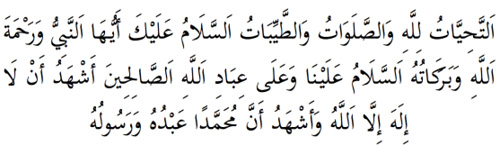

2.Tahiyyat
Abdullah bin Mesud der ki: “Allah Rasulü elimi iki elinin arasına alarak bana Kuran’dan bir sure öğretir gibi Tahiyyât’ı şöylece öğretti (Buharî):

Şafiiler ise tahiyyatı Abdullah bin Abbas’ın rivayet ettiği şekliyle okurlar. Onda buna bir iki kelime daha ilave vardır ama mana olarak aralarında bir fark yoktur.
Okunuşu: Et-tahiyyâtü lillahi ves-salavâtü vet-tayyibâtü es-selamü aleyke eyyühen-nebiyyü ve-rahmetüllahı ve berakâtühü esselamü-aleynâ ve ala-ibadillahi’s-salihîn, eşhedü-en-lâilahe ille’llah ve eşhedü-enne muhammeden abdühû ve rasûlüh.
Anlamı: “Bütün saygı duruşları ve selamlamalar, bütün ibadetler, bütün güzel ve temiz işler sadece Allah için yapılır. Selam sana ey Nebi! Allah’ın rahmeti ve bereketleri de sana! Bize de selam olsun, Allah’ın bütün Salih kullarına da. Ben şahitlik ederim ki, Allah’tan başka ilah yoktur, ben şahitlik ederim ki, Muham-med onun kulu ve rasulüdür”.
Önemi: Cahiliyye döneminde müşrikler krallarına ve putlarına çeşitli saygı duruşları yapıyor, saygı temennaları ve selamlamaları çekiyor, kurbanlar kesiyorlardı. Tahiyyât bunları kaldırdı, bütün saygı duruşlarının sadece Allah için olması gerektiğini bildirdi. Peygamberin Allah’ın kulu ve rasulü olarak o’nun selamına ve rahmetine layık olduğunu öğretti. Böylece tahiyyat ile biz kıyamete kadar her namazımızda Efendimiz Muhammed’e salat ve selam okuruz, ama aynı zamanda onun Allah’ın kulu ve Rasulü olduğunu da hatırlarız ve söyleriz. Yani namazlarımızı onun için değil, Allah için kılarız. Sanki Allah bize hatırlatmak istiyor ki, bu temenna ve saygı duruşlarına ve her tülü ibadete layık olan sadece ve sadece Allah’tır. Yaratılanların en şereflisi olan Hz. Peygamber’i hatırlayıp, sevip ve sayacaksınız. Ona salât ve selam göndereceksiniz. Eğer bu tahiyyata layık bir beşer olsaydı o olurdu. Ama onun bile bir beşer olduğunu unutmayacaksınız.
Bazılar demişler ki, Allah Rasulü hayatta iken tahiyyattaki, ‘selam sana ey Nebî’ cümlesini söylememiz anlamlı idi, ama o hayattan ayrıldıktan sonra bizim dediğimizi duymuyor ki, böyle söyleyelim. Böyle sanmışlar ve bunun yerine, “selam o nebiye=es-Selamu alennebiyyi” demek gerekir diye düşünmüşler. Ama Hz. Ömer’in dediği gibi, Allah Rasulü bize böyle öğretmiş ve bunu zamanla sınırlandırmamıştır. Biz kıyamete kadar böyle deriz. Onun zamanında o Medine’de iken Mekke’de, ya da Taif’te olanlar da aynen böyle söylüyorlardı. Oysa onlar da onu görmüyorlardı, o da onları duymuyordu.
Tahiyyattaki, “Salih kullar” cümlesine melekler ve insanların salih olanları dahildir. Hatta cinler de dahildir. Çünkü onların da salihleri vardır.
Tahiyyat’la ilgili olarak bazılar şöyle bir kıssa anlatırlar: Hz. Peygamber Miraca çıktığında Allah ona; esselamü-aleyke eyyü-hennebiyyu diye selam vermiş, Hz. Peygamber de; es-selamü aleyna... diyerek Allah’ın selamını almış. İlah. Bu kıssanın kaynaklarda yeri yoktur. (Keşmirî, Tirmizi şerhi).